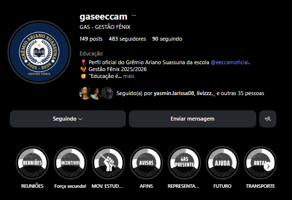
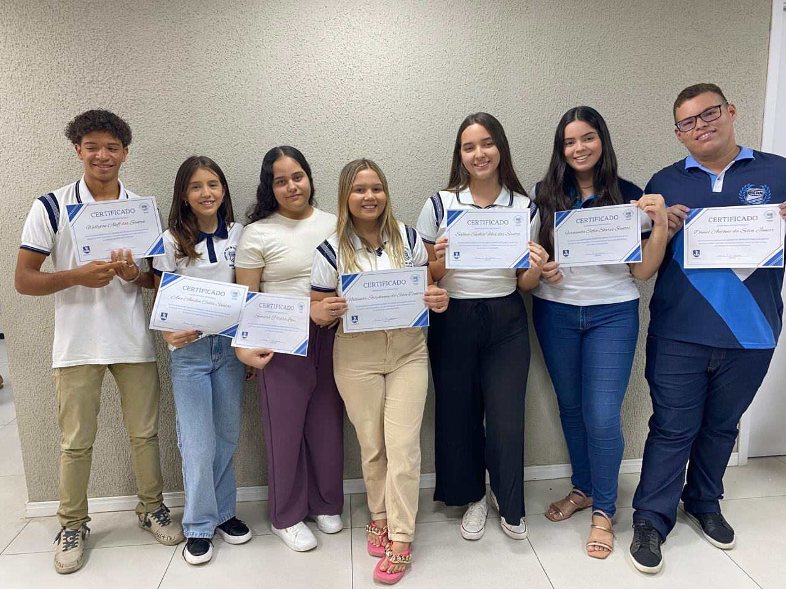
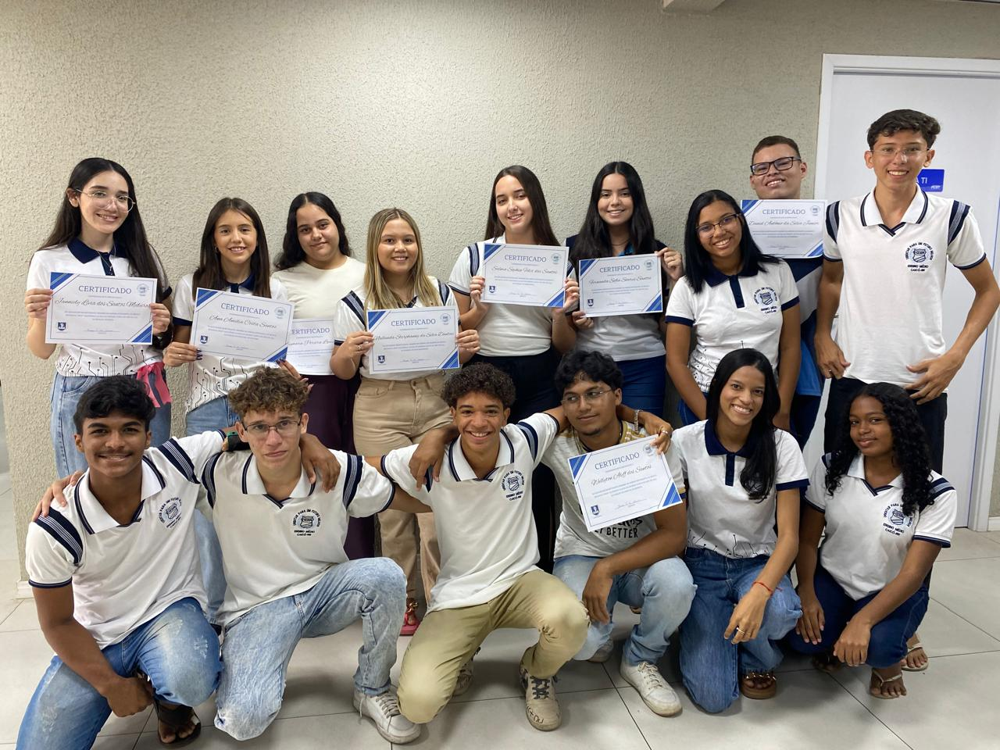
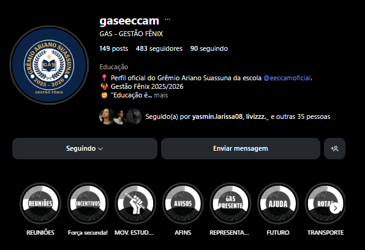
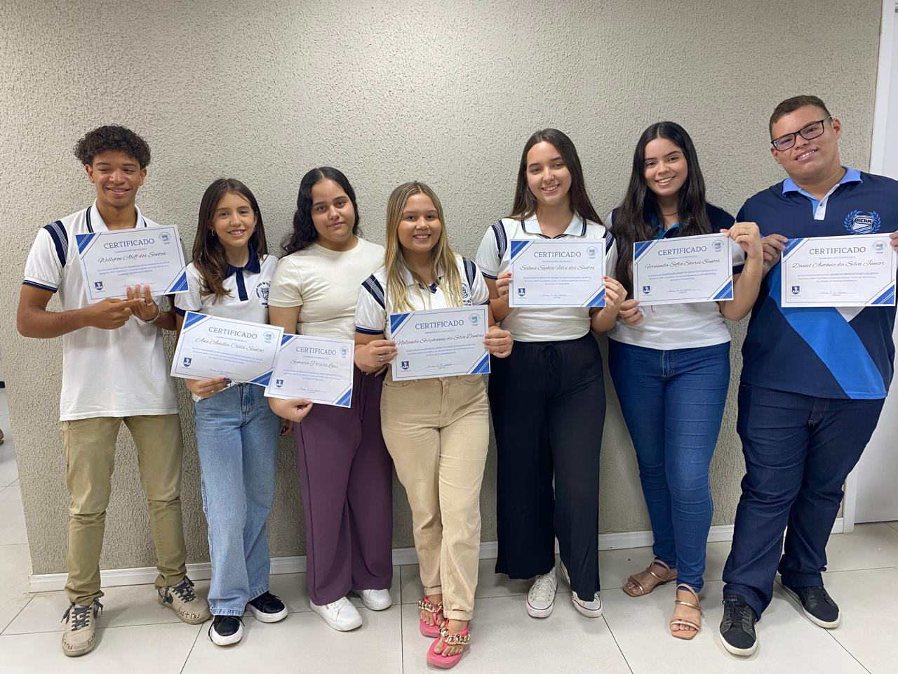
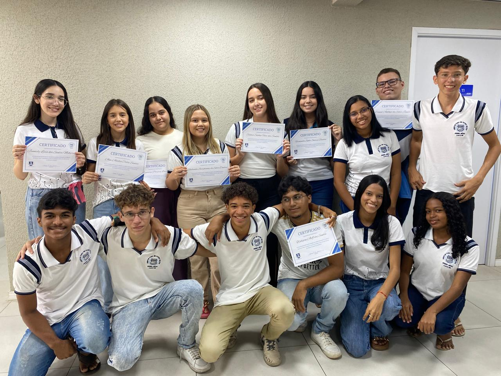

Sobre a Escola
A escola EECCAM, localizada na cidade de Caicó-RN, fornece o ensino médio regular (matutino e vespertino), o ensino médio integrado ao curso técnico em informática (matutino) e também oferece o curso técnico em energias renováveis (vespertino) para alunos das 2ª e 3ª séries.
Materias Regulares:
- Arte
- Biologia
- Educação Física
- Eletivas
- Filosofia
- Física
- Geografia
- História
- Língua Espanhola
- Língua Inglesa
- Língua Portuguesa
- Matemática
- Projeto de Vida
- Química
- Sociologia
- Arte
- Biologia
- Componente Eletivo
- Educação Física
- Filosofia
- Física
- Geografia
- História
- Língua Espanhola
- Língua Inglesa
- Língua Portuguesa
- Matemática
- Química
- Recomposição de Aprendizagens - Matemática
- Recomposição de Aprendizagens - Português
- Sociologia
- Arte
- Biologia
- Componente Eletivo
- Educação Física
- Filosofia
- Física
- Geografia
- História
- Língua Espanhola
- Língua Inglesa
- Língua Portuguesa
- Matemática
- Química
- Recomposição de Aprendizagens - Matemática
- Recomposição de Aprendizagens - Português
- Redação
- Sociologia
1ª Série
2ª Série
3ª Série
Curso Técnico em Informática💻
A escola EECCAM, fornece o ensino médio integrado ao curso técnico em informática , no turno matutino, trazendo a tecnologia ao cotidiano dos alunos. Assim, facilitando o entendimento as tecnologias da atualidade.
Além das matérias regulares, o curso fornece matérias totalmente focadas na informática, e ao final do curso os alunos devem apresentar um Trabalho de Conclusão de Curso (TCC), juntando os conhecimentos apresentados desde a 1ª série.
Materias Técnicas em Informática:
- Arquitetura e Organização de Computadores
- Eletivas
- Empreendedorismo
- Fundamentos de Redes de Computadores
- Informática Básica
- Lógica de Programação (Algoritmos)
- Noções de Eletrônica e Eletricidade
- Banco de Dados
- Eletivas
- Empreendedorismo
- Fundamentos de Redes de Computadores
- Metodologia do Trabalho Científico
- Programação Estruturada e Orientada a Objetos
- Programação Web I e II
- Desenvolvimento de Sistemas
- Eletivas
- Informática Básica
- Metodologia do Trabalho Científico
- Segurança da Informação
- Tecnologia de Implementação de Redes
- Trabalho de Conclusão de Curso - TCC
1ª Série
2ª Série
3ª Série
Projeto Oásis 🎭
O Projeto Oásis é um projeto de artes da EECCAM que promove a arte cênica como forma de expressão cultural, criatividade e integração entre os alunos. As apresentações do grupo incentivam a sensibilidade artística e a valorização da cultura local.
Siga o projeto no Instagram: @oasis_eeccam

Biblioteca Cícero Úrsula 📚
A Biblioteca Cícero Úrsula é um local repleto de livros de diferentes gêneros, que agradam todos os tipos de estudantes.
Eventos literários são planejados para apresentar novos livros, e criar novos leitores.
Siga a biblioteca no Instagram: @biblioteca_ciceroursula
Grêmio Estudantil 👥
O Grêmio Ariano Suassuna, atualmente é comandado pela Chapa Fênix, eleita no ano de 2025, tendo uma duraçao de 2 anos de mandanto.
O grêmio tem como objetivo representar e defender a voz dos estudantes durantes reuniões e eventos. Além disso o grêmio promove ações e projetos voltados para o benefício dos estudantes.
Siga o grêmio no Instagram: @gaseeccam
 





Esportes 🏆
Os atletas da nossa escola a cada vez mais se destacam em esportes diferentes, por exemplo, fultebol, vôlei e xadrez.
Trazendo não apenas medalhas e titulos, mas tambem dando cada vez mais orgulho para nossa escola.
Semana de Informática 💻
A Semana de Informática é um evento da EECCAM que reúne palestras, oficinas e atividades práticas sobre tecnologia, programação e inovação digital. O objetivo é aproximar os alunos do mundo da tecnologia e incentivar novas descobertas.
A comissão organizadora é composta pelos professores Aislânia Alves e Francimar Carlos e os alunos da 2ª série, organizam: apresentações, workshop's de TCC's, oficinas com atividades práticas, apresentações de software e palestras ministradas por profissionais da área.
Aulões para ENEM
Durante o período que antecede o Exame Nacional do Ensino Médio, são feitos aulões preparatórios para ajudarem os alunos das 3ªs séries durante a prova.
Os aulões são ministrados por professores da propia instituição, e são divididos pelas seguintes áreas: Linguagens, Ciências da Natureza, Ciências Humanas, Matemática e Redação.


Festival de Teatro da Uern🏅
De mãos dadas com a arte O FESTUERN acredita no poder da arte como caminho de transformação cultural. Por meio das oficinas, estudantes têm a oportunidade de experimentar, aprender e crescer junto aos grupos artísticos que compartilham saberes e práticas.
Por meio de peças teatrais do grupo OÁSIS, a escola está inserida no FestUern. Desde 2023 o grupo vem trazendo apresentações originais, escritas pela professora Helissa Medeiros e a aluna Graça Santos, além delas, Vanize Pereira e Geraldo Bernardo auxiliam no projeto durante o festival de teatro.
Siga o festival no Instagram: @festuernoficial
Projeto Meninas no Espaço 🚀
O projeto Meninas no Espaço incentiva a participação de alunas em atividades relacionadas à ciência, tecnologia e astronomia. O objetivo é estimular o protagonismo feminino em áreas científicas, despertando vocações e ampliando horizontes.
Siga o projeto no Instagram: @meninasnoespaco
Feira de Iniciação Científica e Tecnológica do Seridó 🌱🔬
A FICTS é uma feira que integra ciência, tecnologia e inovação, promovendo um futuro sustentável. Os alunos da EECCAM apresentam projetos que transformam desafios em soluções criativas, destacando a pesquisa, o pensamento crítico e a busca por melhorias na sociedade.
Durante a feira, o grupo de alunas e professoras que também participam do projeto Meninas no Espaço apresentou, por meio de maquetes, os protocolos GLOBE da NASA, conectando ciência, observação ambiental e inovação tecnológica.
Equipe de Professores
A nossa escola é repleta de profissionais qualificados para repassarem seus conhecimenntos e valores para os nossos alunos.
Aqui abaixo, temos uma tabela completa de todos os nossos professores, nesta tabela podemos ver o nome completo, matéria lecionada, turnos trabalhados, e ano de ingressão na instituição de todos os profissionais.
Ao clicar no nome do profissional, é possivel acessar o currículo do Escavdor de cada um dos professores.
Redes Sociais da Escola
Siga a escola no Instagram: @eeccamoficial